Microsoft's agents get work accounts, like employees
Google's Gemini 4 Neon nears the top models for less, Anthropic prices its IPO, Slack agents take standing orders, and Google previews an agent that tends apps after launch.
Agents as staff: Autopilot, Teams agents and Foundry agents get their own Entra identity, some a mailbox and a place in the org chart.
Copilot first: Office and Code move into the Copilot app, and Microsoft IQ offers the same company context to outside agents.
For builders: the Copilot SDK 2.0 and a Foundry harness open Microsoft's own agent engine; Agent 365 adds controls and costs.
Why it mattersMicrosoft now treats an agent like a new hire: a name in the directory, a mailbox, a seat in Teams and an admin who can switch it off. Agent products will be judged on how they fit that seat.
Price: $3 per million input tokens and $15 per million output, with a 1 million-token context; rolling out in the Gemini API and to Pro and Ultra subscribers.
Google's figures: third overall at 61 on the Artificial Analysis index, at 32% lower cost per task than Gemini 4 Carbon on its default setting.
Why it mattersA model one step below the top now scores close to it for less per task. For most agent products the cheaper tier becomes the default, and the top model is saved for the hardest steps.
The offering: 980,000,000 Class A shares, most sold by Anthropic; trading starts November 19 on Nasdaq under ANT.
More to come: underwriters may buy up to 147,000,000 more shares within 30 days; the offering is set to close November 20.
Why it mattersClaude's maker will now report revenue, costs and risks every quarter. Builders who depend on Claude get a regular public read on its business that private labs never give.
How it works: in an agent's direct message, people hand it standing jobs, like a morning digest or a weekly report, and it runs them on its own.
On by default: developers can switch it off; it needs Slack's newer agent view and the assistant:write permission.
Why it mattersSlack teaches people to give an agent standing orders, not just questions. Agents for work chat now need a schedule and a record of runs, not only a reply.
What it does: connects to a codebase and live product data, finds security, speed and accessibility problems, and opens pull requests for a person to approve.
Stage: an experiment with a waitlist; it connects through over 180 integrations and custom MCP servers.
Why it mattersCoding agents so far stop when the code ships. Stitch Loop takes on the work that follows, keeping a live product healthy, and moves the agent from builder to owner.
Ignite 2026: all 46 announcements
Both days of Ignite, each announcement linked to its own page, with pictures and videos where Microsoft published them, grouped by what it changes for someone building a product with AI.
46announcements
21available now
21in preview
4announced, coming later
The launches that matter most
01AutopilotFrontierA personal agent with its own identity, memory and tools that keeps working on a task without new prompts.Rolling out to Frontier customers from November 17; an Entra Agent ID for Autopilot agents is in preview.Why it mattersThe assistant stops waiting to be asked. Work products now need to say what an agent may do while nobody is watching.
02Teams agents as colleaguesPreviewAgents receive Entra accounts, join chats, channels and meetings, can be @mentioned and can post without being asked, within set limits.Foundry hosted agents can also get an email address, a Teams presence and a place in the org chart.Why it mattersTeams becomes the place agents are hired into. An agent that cannot sit in a chat or a meeting will look like a tool, not a teammate.
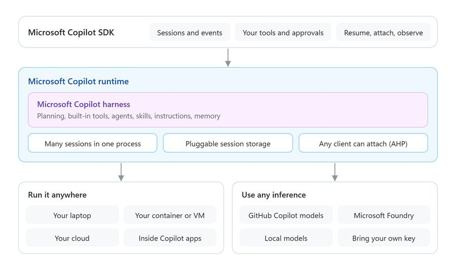
Image: Microsoft03Microsoft Copilot SDK 2.0Generally availableLets developers build the agent engine Microsoft and GitHub run in production into their own apps, with many users served from one runtime.Rebuilt in Rust, one test turn went from 5.25 seconds to 55.3 milliseconds; six programming languages; announced November 17.Why it mattersWriting your own agent loop becomes optional. The edge moves to what the agent knows and is allowed to do, not the loop that runs it.
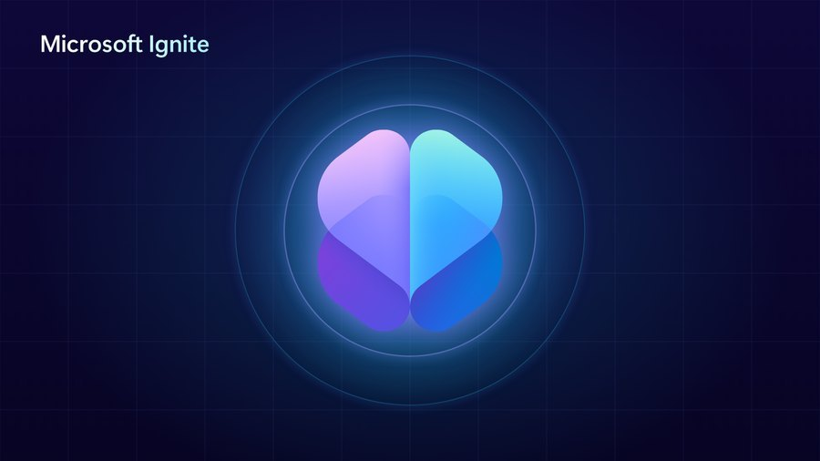
Image: Microsoft04Microsoft IQGenerally availableOne place for a company's data, skills and tools, which Copilot, GitHub Copilot, Foundry and other agents reach over MCP.It brings Work IQ, Fabric IQ, Foundry IQ and Web IQ together, with no new license to buy.Why it mattersCompany context becomes something Microsoft sells to every agent, including ones it did not build. Whoever holds that context shapes how good each agent's answers are.
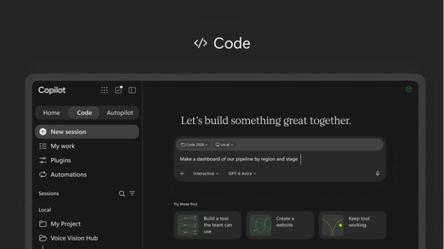
Image: Microsoft05Copilot Code and Managed RuntimeFrontierDescribe a dashboard, tracker or app in plain words and Copilot builds it, then runs it inside the company's own tenant.Copilot Code reaches general availability in December; Copilot Managed Runtime, which hosts and governs these apps, is generally available now.Why it mattersAny employee can now make the small internal app they used to request. Makers of simple internal tools now compete with a button inside Copilot.
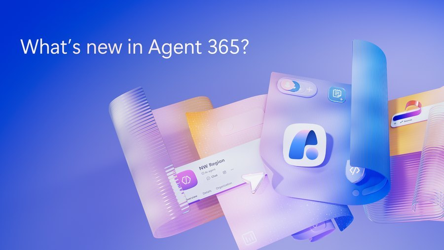
Image: Microsoft06Agent 365 for local agentsPreviewCoding agents on a PC, starting with GitHub Copilot CLI and Claude Code, get an Entra Agent ID that IT can see and control.Admins can also choose who may use each plugin and skill in Copilot and Cowork, now generally available.Why it mattersAgents on laptops stop being invisible to IT. A coding agent sold to companies will need to show up in that list and follow its rules.
Everything else, by what it changes
Copilot becomes where work starts
Home in the Copilot appRolling outOne starting point for Chat and Cowork; Auto suggests moving a complex task to Cowork and carries the context across.Watch the video
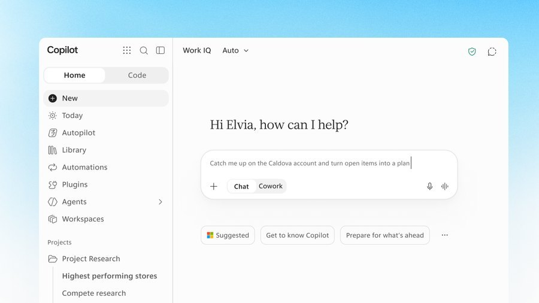
Image: MicrosoftOffice in Copilot and TodayGenerally availableWord, Excel and PowerPoint run in the Copilot app, saving to OneDrive.Today, which turns mail, meetings and chats into priorities and drafts to approve, is in private preview.Watch the video
Copilot WorkspacesFrontierA shared space where a team and Copilot track changes, questions and actions; it replaces Copilot Notebooks.Workspace memory is in public preview; personal Autopilot agents are coming to Workspaces.
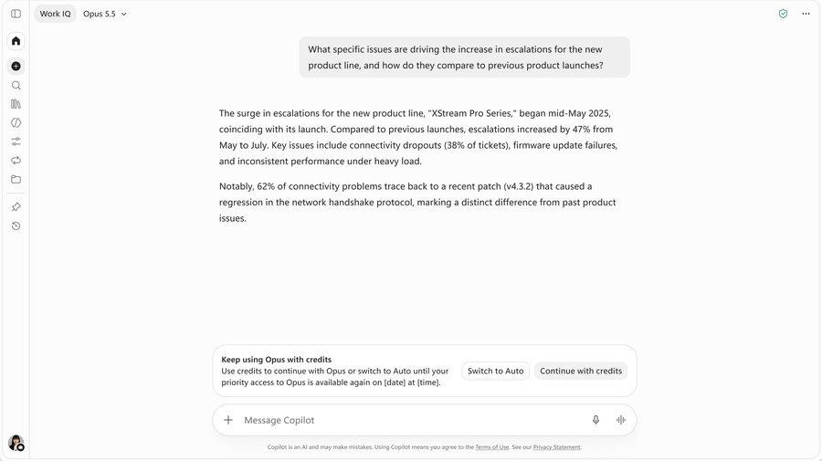
Image: MicrosoftCopilot CreditsComing in DecemberPeople who reach their license limits keep using a chosen model, paid by usage.Cloud PCs for agents from Windows 365 for Agents can be paid with the same credits.
Copilot on WindowsPreviewCopilot finds, moves and renames files on the PC, explains PC problems, and opens from the new Windows Search.
Why it mattersThe chat app, not Office, is now the front door, and heavy use is billed by the meter. Products that live inside Microsoft 365 must show up in Copilot to be found.
Agents join the team
Agent AccountsComing in DecemberCopilot Studio agents that stay on and take delegated work through documents, email or Teams.Public preview is scheduled for December.
Foundry hosted agentsGenerally availableAgents built with a company's own code run on Microsoft's service, with network limits and crash recovery.Running them on your own clusters is targeted for early December.
Microsoft Copilot harness in FoundryPublic previewMicrosoft runs the agent loop and sandbox; a team brings the knowledge, skills and tools.Voice agents that people can interrupt mid-sentence are generally available in Foundry.Watch the video
Image: MicrosoftWindows 365 for AgentsAvailableAgents get managed Cloud PCs for apps with no API, as a tool in Copilot Studio.Foundry access comes in preview early next year; always-on Cloud PCs for agents are in Frontier preview.
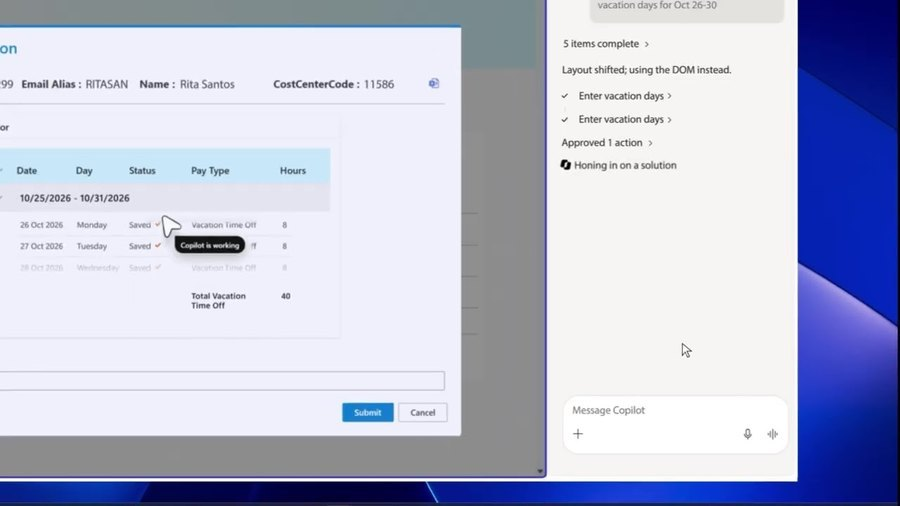
Image: MicrosoftEdge for BusinessPreviewIT can make agents browse in Edge, each in its own window with its own identity.A skills recorder turns a task done in Edge into a reusable Cowork skill.Watch the video
Azure SRE Agent and deployment agentPublic previewThe operations agent now works in Teams and with other agents.The deployment agent, which turns plain requests into infrastructure code, is generally available. November 17.
Azure CatalystGenerally availableOne place to plan and run moves of apps, databases and servers to Azure, with an agent that does the migration work.Announced November 17; the agent's new modernization features are in preview.
SQL and PostgreSQL database agentsPreviewAgents watch databases, explain problems and suggest or run approved fixes.Database Hub in Fabric, one view of databases across clouds, is generally available.
Why it mattersAgents now get what an employee gets: an account, a computer, a browser and a seat in the chat. The hard part moves from building one agent to managing a staff of them.
Company data, for any agent
Image: MicrosoftWork IQGenerally availableAgents search and remember across Microsoft 365 with each person's permissions, and take on longer tasks.Reacting to new messages without a prompt, and finer approval controls, are in preview.
Foundry IQ and Fabric IQPreviewFoundry IQ maps how documents connect so agents cite sources; Fabric IQ answers from a company's agreed numbers.Fabric IQ connectors for ChatGPT and Claude are in preview.
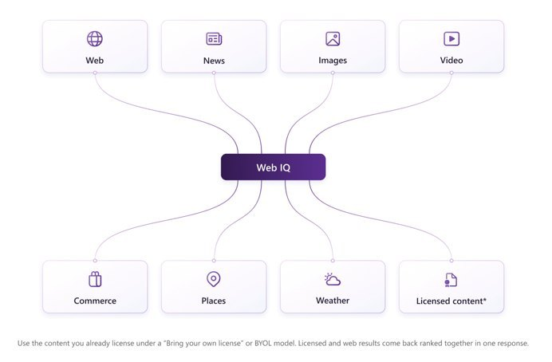
Image: MicrosoftWeb IQGenerally availableWeb pages, news, images, places and weather for agents and apps, open to all Azure customers at a lower price.Product data for shopping agents, 40 billion+ listings, is in private preview.
Salesforce in CopilotPublic previewSellers get Salesforce data and permitted actions inside Copilot, with 38+ sales skills.Sales Cloud in Teams is in a pilot; Salesforce and Fabric share data without copying it.
Dynamics 365 in CopilotGenerally availableSales, customer service and finance plugins bring Dynamics 365 work into Copilot and Excel.Agents to scope moves off SAP ECC are rolling out.
Fabric apps and RayfinGenerally availableReady backends (database, sign-in, services) for business apps on company data, including apps made in Copilot.More than 100,000 apps built since preview.
Azure HorizonDB and other databasesGenerally availableA managed PostgreSQL database with built-in vector search; Cosmos DB adds a semantic reranker and a Rust SDK.Redis 8 with an agent kit is in preview.
Why it mattersCompany context is now for sale to every agent, Microsoft's and others'. Agents will be judged on the data they can reach, and data products will be built to be read by agents.
Models and tools for builders
MAI models and Decision-1.1Generally availableSeven Microsoft models for coding, images, voice, transcription and security.Microsoft's figures: MAI Code 2 gets 98% of GPT-6.1 Sol's coding quality at about 40% of the price.
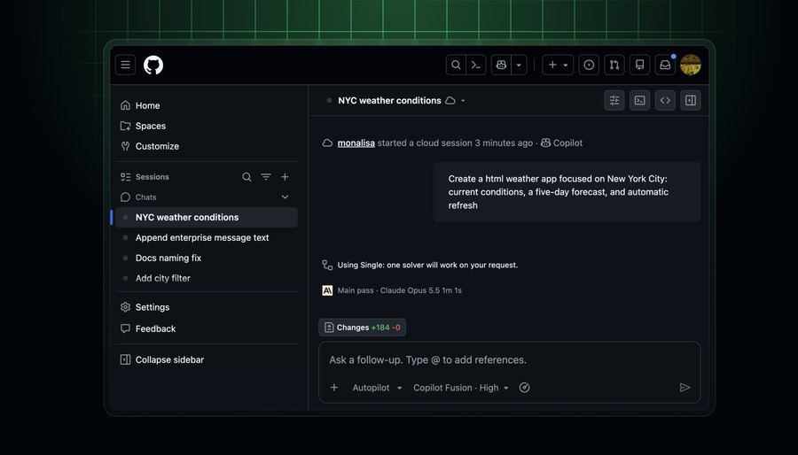
Image: GitHubCopilot Fusion and browser useAvailableGitHub Copilot mixes several models on one task, and can drive a browser to debug web apps.Browser use and Copilot Evals, which tests skills and MCP tools, are in public preview.
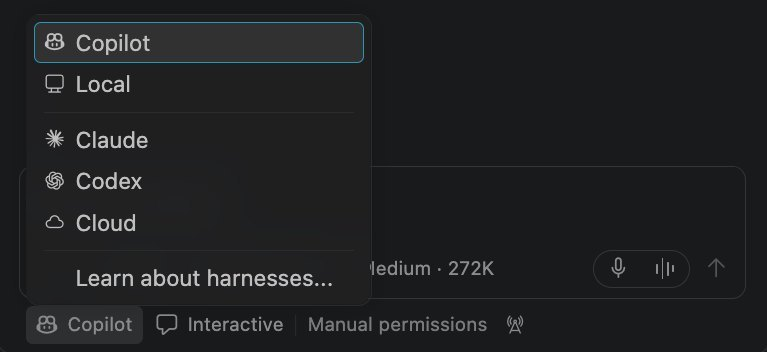
Image: MicrosoftVS Code moves to the Copilot harnessAvailableVS Code's agents now run on the same engine as Copilot CLI; the old one goes in February 2027.In one rollout comparison it used 14.2% fewer tokens per device.
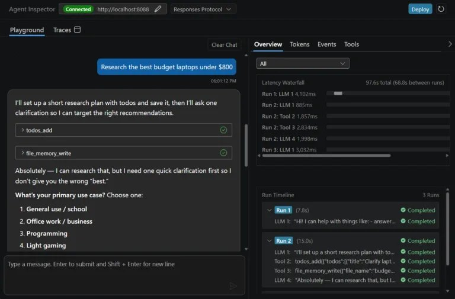
Image: MicrosoftFoundry Dev Pack and ToolboxesGenerally availableFoundry's tools for editor, terminal and coding agents in one install; Toolboxes share tools across agents.An A2A tool links Foundry agents to outside agents.
Continuous improvement in FoundryGenerally availableFoundry groups repeated agent failures, scores whole conversations and tests fixes before release.Expert notes on agent runs and training on your own data are in preview.
Frontier TuningPrivate previewCompany experts tune AI skills to their own standards, with a GitHub Copilot plugin, a CLI and publishing to Cowork.The private preview opens to more customers.Watch the video
GitHub Copilot connectorsPublic previewEight more services, including Supabase, Box and Calendly, connect to Copilot through GitHub-verified MCP servers.Shared team plugins are generally available.
Why it mattersMicrosoft ships its own low-cost models and the engine that runs them. Picking a model turns into reading a price list, and the engine becomes a shared part nobody needs to rebuild.
Keeping agents in check
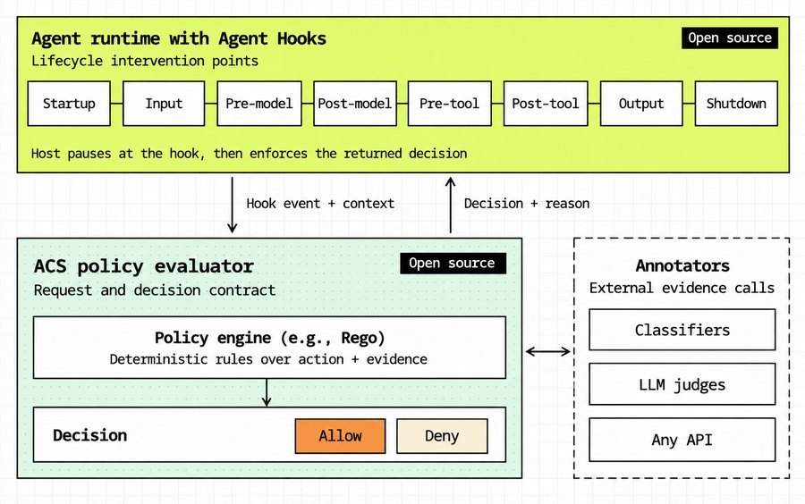
Image: MicrosoftAgent controlsPublic previewOne Azure service where companies set rules for what any agent may do, checked before a tool runs or data leaves.Built on two open-source specs, Agent Hooks and the Agent Control Specification.
Agent 365 cost and analyticsFrontierOne view of AI spending with limits and alerts, and a dashboard of what agents cost and deliver.Cost management is in preview, as is Dynamic Agent Risk, a live risk level for each agent.
Microsoft Entra for agentsPreviewAgent IDs extend to Autopilot agents, and network controls now cover local agents and MCP servers.Microsoft MCP Server for Enterprise, which lets agents query Entra data, is generally available.
Microsoft Perception and MDASHGenerally availableSecurity agents test attacks, investigate alerts and rank weak spots; MDASH uses 100+ agents to find real flaws in code.MDASH is in preview.
Defender for local AI agentsGenerally availableChecks what coding agents on Windows are told to do for hidden malicious instructions.Shielding unpatched systems during an attack is in preview.
Purview for Copilot and agentsPreviewStops Copilot from using sensitive files even when they carry no label, and limits what data agents on Windows can share.
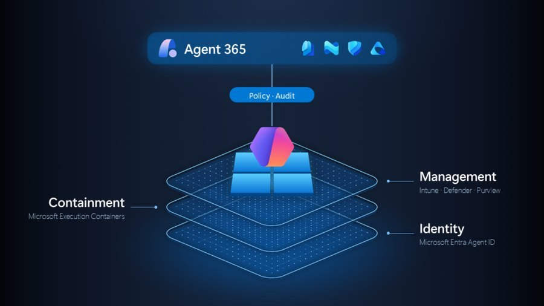
Image: MicrosoftAgents in Windows containersPreviewWindows runs each agent in a container with limits on the files and networks it can reach.A learning mode that watches agents before rules are enforced is generally available.Watch the video
AI Transparency InitiativeAnnouncedMicrosoft and more than 40 organizations start shared standards so what models and agents do can be checked independently.
Why it mattersAgents face the checks staff face: identity, permissions, audits and a risk score. Selling agents to companies means passing those checks, and governance becomes something buyers compare.
The infrastructure underneath
Agents on your own AKS clustersPreviewRun Foundry models and agents on your own Kubernetes clusters, with sandboxes for the code agents write.Confidential computing across several GPUs is in preview.
Image: MicrosoftAzure Cobalt 200Generally availableArm-based virtual machines that speed up the work agents do outside the model.Up to 50% better CPU performance than Cobalt 100.
Microsoft and IntelAnnouncedA long-term deal: Microsoft's own chips will use Intel's packaging, and Intel Xeon memory and security features come to Azure.
Windows and Windows 365 for ITPreviewWindows Server 2028 is in preview, Cloud PCs can run local AI models, and Intune can block devices running unapproved agents.
Why it mattersMicrosoft is building agents into its chips, servers and Windows. Companies that want agents on their own hardware or clusters now get Microsoft's tools there too.